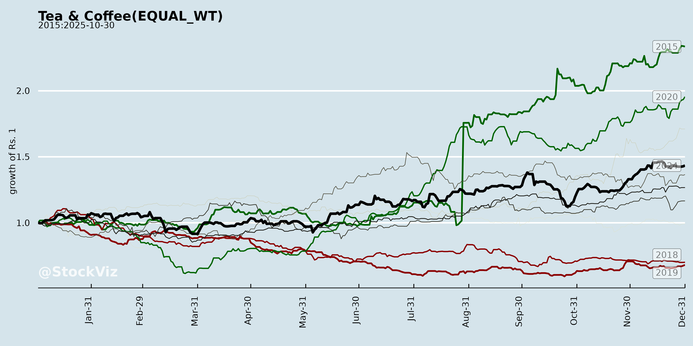
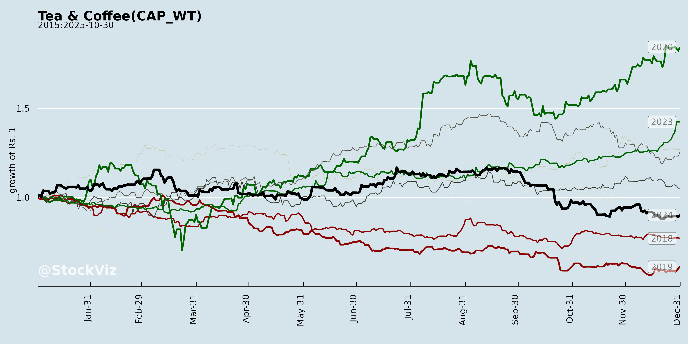
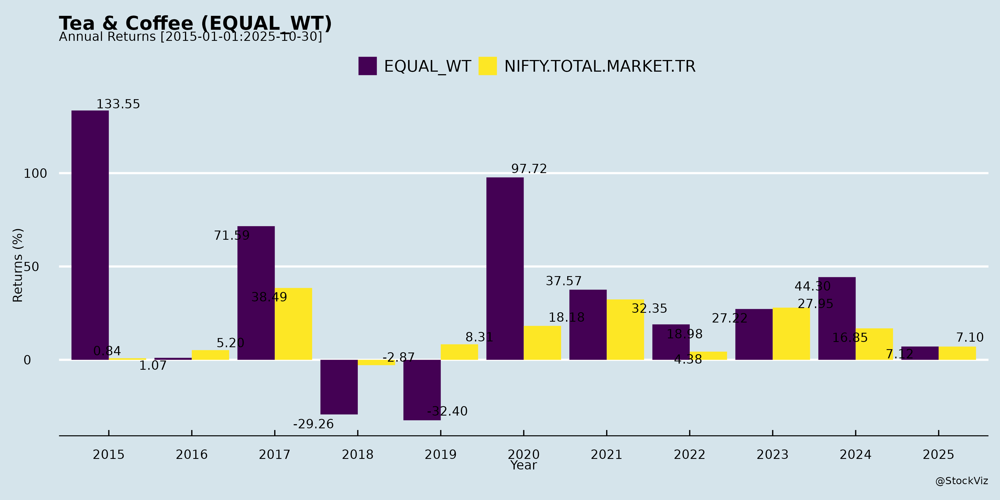
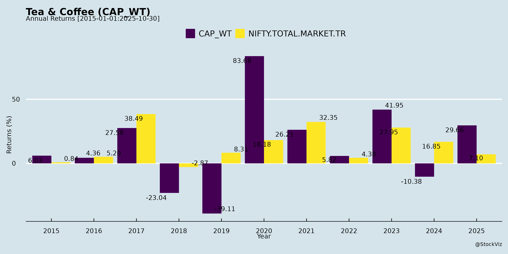
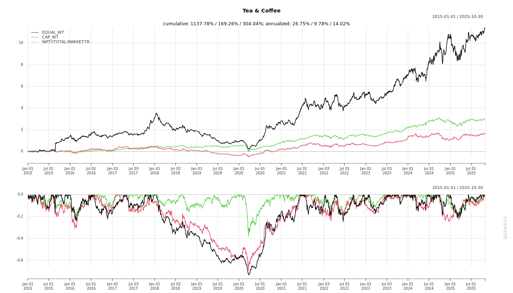
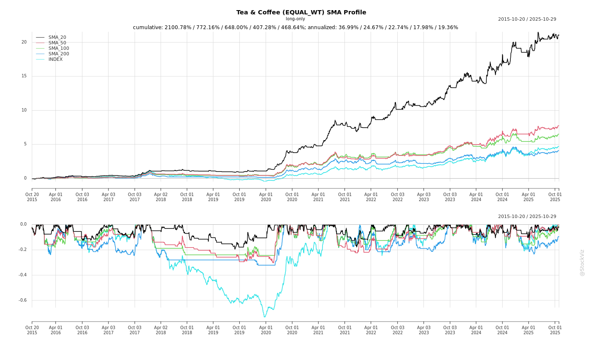
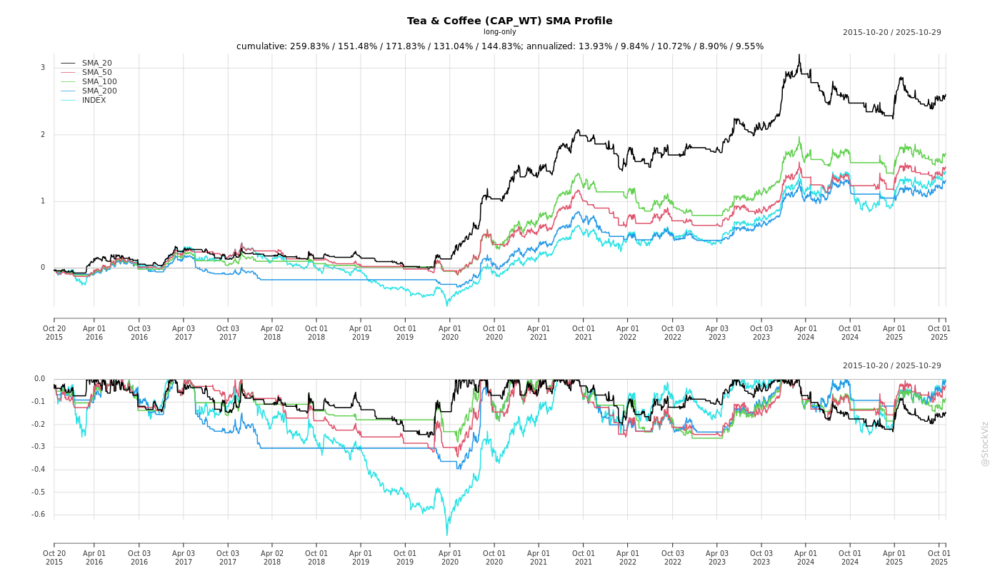
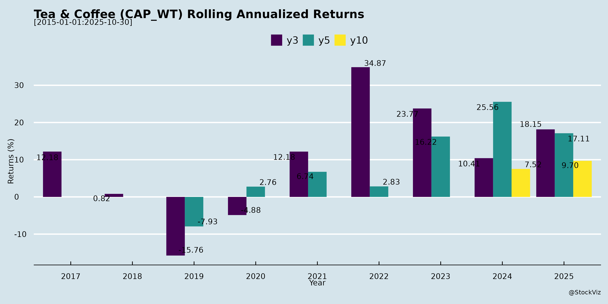

Tea & Coffee
Industry Metrics
February 20, 2026
Annual Returns




Cumulative Returns and Drawdowns

SMA Scenarios


Current Distance from SMA
Rolling Returns


Market Cap
EBIT (% of Industry Total)
Revenue (% of Industry Total)
AI Summaries
Analyst
asof: 2025-11-30
Indian Tea & Coffee Sector Analysis
Based on inputs from Tata Consumer Products Ltd. (investor meets schedule) and CCL Products (India) Ltd. (Q2 FY26 Earnings Transcript).
Tata’s update signals ongoing investor engagement amid sector stability (no UPSI shared), while CCL’s results highlight robust coffee demand and branded growth. Tea mentions are limited (Tata’s core; CCL’s iced tea trials), but coffee drives insights. Sector trends: Strong branded/domestic momentum offsets commodity volatility.
Tailwinds
- Robust Branded Demand: CCL’s domestic sales hit INR310cr (H1; branded INR210cr, +40-50% YoY with 25-30% volume-led). Double-digit market share in e-com/modern trade; #2 in South states. Tata’s investor meets suggest confidence in consumer staples.
- Operational Efficiencies: CCL EBITDA/kg up ~INR10-12 to INR130/kg (H1); better yields, receivables, inventory use. Debt reduction ahead of guidance (net ~INR1,250cr).
- Distribution Expansion: CCL at 1.3-1.4L outlets, targeting 2x in 3yrs via multi-SKU (small packs, flavors).
- Demand Resilience: Global coffee demand strong despite volatility; CCL volumes +20% Q2 (+15% H1 blended).
Headwinds
- Green Coffee Volatility: Prices softened post-Brazil but rebounded; Vietnam crop uncertainty (flooding risks, Dec clarity). Speculation drives swings (~$100/2 days).
- Input Cost Pressure: 60-70% costs tied to coffee; elevated prices cap long-term contracts, buyer tentativeness.
- Seasonal/External Factors: H2 procurement spikes debt; India tariffs high (US mitigated via Vietnam ops).
- Limited Tea Visibility: Inputs focus coffee; tea growth muted (in-home low single-digits per CCL).
Growth Prospects
- Domestic Branded Surge: CCL targets INR420-430cr FY26 (5-6% EBITDA margins, self-funding expansions). Category out-of-home > in-home; 10-20% long-term volume growth.
- FMCG Diversification: CCL vision: Pure coffee → FMCG (iced tea, snacks test-launched; complements distribution). Tata’s Tata Coffee synergies implied.
- Capacity Ramp: CCL blended 65-70% util. (new FD/SD at 15-20%); full ramp in 3yrs supports 15-20% EBITDA CAGR (upper-end likely).
- Intl./Exports: Vietnam/India ops buffer tariffs; Europe/US growth despite Brazil competition.
- Overall Sector: 44% H1 revenue growth (CCL); investor forums (Tata) signal M&A/capex potential.
Key Risks
| Risk | Description | Mitigation |
|---|---|---|
| Commodity Volatility | Vietnam/Brazil crop failure → cost spikes, margin erosion (EBITDA/kg vulnerable). | Short-term contracts, hedging via Vietnam (36-37KT capex). |
| Debt & WC Cycle | H2 harvest procurement → debt to INR1,300-1,400cr FY26-end. | Efficiencies (receivables down); INR1,200cr target by Mar’26. |
| Competition/Execution | Branded wars (#1/#2 pricing aggression); FMCG scaling (test mkt failure). | Market share gains; calibrated launches. |
| Geopolitical/Regulatory | US/EU tariffs; India private label shifts. | Diversified ops (India 40KT, Vietnam); 80% India private label share. |
| Macro | Demand slowdown if prices stay high; base effects in H2. | Robust category demand; 15-20% vol. guidance. |
Summary: Indian tea/coffee sector enjoys strong tailwinds from branded coffee acceleration (volumes/margins up) and FMCG pivot, driving 20%+ growth prospects (upper-end FY26). Headwinds center on coffee volatility, but manageable via ops diversification. Key risks are commodity-driven (high probability, medium impact); focus on debt discipline and execution for sustained 15-20% EBITDA growth. Tata/CCL exemplify resilience; monitor Vietnam crop (Dec’25). Bullish outlook with volatility as primary watchpoint.
Financial
asof: 2025-12-02
Indian Tea & Coffee Sector Analysis (Q3 & 9M FY25 Insights from Filings)
The provided filings cover ~12 listed tea/tea-focused companies (e.g., Tata Consumer Products, McLeod Russel, Jay Shree Tea, Rossell India, Dhunseri Tea, etc.) for Q3/9M ended Dec 31, 2024. These represent a mix of large integrated players (e.g., Tata Consumer) and smaller/niche firms. Overall sector shows resilient revenue growth amid cost pressures, with branded/international segments outperforming, but stressed balance sheets in mid/small-caps. Tata Consumer (market leader) drives positivity; McLeod Russel highlights distress.
Tailwinds (Positive Drivers)
- Revenue Momentum: Aggregate YoY growth ~15-20% (e.g., Tata Consumer +17% consolidated, +22% standalone; Rossell +21%; Dhunseri +17%). Ex-acquisitions: 8-12% organic (Tata). Non-branded/plantations and international ops (e.g., Tata’s 4% intl growth) resilient.
- Profitability Boost: Strong other income (dividends from subs, asset sales). Tata PAT +6% despite costs; United Nilgiri EPS ₹29; Rossell PAT ₹41 Cr (9M).
- Strategic Wins: Acquisitions/amalgamations (Tata integrated Soulfull, Capital Foods); asset monetization (Jay Shree ₹55 Cr gain; Dhunseri ₹15 Cr exceptional). Dividend payouts signal confidence (e.g., United Nilgiri 10%).
- Operational Efficiency: Inventory optimization, cost rationalization (e.g., Gillanders tea segment profit turnaround).
Headwinds (Challenges)
- Input Cost Inflation: Tea leaf prices up sharply (Tata: “impacted by tea cost inflation”; Rossell green leaf costs high). Power/fuel, employee expenses ~40-50% of costs.
- Seasonality & Weather: Q3 crop losses (Dhunseri, Gillanders); seasonal losses common (Peria Karamalai -₹3 Cr Q3 loss).
- Distressed Peers: McLeod Russel severe (₹92 Cr Q3 loss; adverse audit on ICDs ₹2,860 Cr doubtful, debt ₹1,500 Cr default, going concern risk). High finance costs (10-20% of expenses).
- Margin Pressure: EBITDA margins 8-13% (Tata 9.6%; others volatile); forex losses (Dhunseri ₹34 Cr 9M).
Growth Prospects
- High (15-20% CAGR 2-3 Yrs):
- Branded/Processed Tea: Tata India branded +10%; premiumization (organic, ready-to-drink).
- Intl/Non-Branded: Tata intl +4%, non-branded +8%; exports resilient.
- Diversification: Coffee/fertilizers (Jay Shree); asset sales for deleveraging (Dhunseri plans tea estate sales).
- M&A/Expansion: Tata’s Soulfull/Capital Foods integration; Rossell acquired estate (+7 Mn Kg capacity).
- Volume Drivers: Good monsoon outlook; capacity adds (Rossell to 7 Mn Kg).
- Sector Tailwind: Rising domestic consumption (health beverages); exports to Middle East/Africa.
Key Risks
| Risk Category | Details | Impact Level | Mitigants |
|---|---|---|---|
| Financial Distress | High debt (McLeod ₹1,500 Cr, ARC assignment); ICD recoverability (₹2,860 Cr doubtful). | High (sector contagion) | Tata deleveraged (D/E 0.12); asset sales. |
| Commodity Volatility | Tea prices +20-30% YoY; weather (crop losses). | High | Hedging; diversification (branded 70-80% revenue). |
| Operational | Seasonality (Q3 weak); labor costs (40% expenses). | Medium | Efficiency drives; mechanization. |
| Regulatory/Audit | Adverse opinions (McLeod: going concern); tax disputes. | Medium | Strong governance in leaders (Tata clean audit). |
| Forex/Geo | Export exposure (40% revenue); currency swings. | Medium | Natural hedge via exports. |
| M&A Integration | Post-merger costs (Tata exceptional ₹50 Cr). | Low | Proven track record. |
Overall Sector Outlook: Moderately Positive. Leaders (Tata ~60% mcap) buoyed by branding/export growth; midcaps vulnerable (McLeod-like risks). Expect 10-15% revenue CAGR FY25-27, margins stabilizing at 10-12%. Watch debt resolution, tea auctions, monsoons. Investors: Favor Tata/Rossell; avoid distressed (McLeod).
General
asof: 2025-11-30
Summary Analysis: Indian Tea & Coffee Sector (Based on Provided Announcements)
The provided documents are regulatory filings (under SEBI LODR Reg. 30) from key listed players like Tata Consumer Products, CCL Products, Dhunseri Tea, Grob Tea, Rossell India, Jay Shree Tea, McLeod Russel, Norben Tea, and others (dated Aug-Nov 2025). They highlight compliance, governance, sustainability, capital actions, and strategic shifts. Overall, the sector shows resilience amid sustainability focus but faces funding and asset optimization pressures. Below is a structured analysis of headwinds, tailwinds, growth prospects, and key risks.
Tailwinds (Positive Catalysts)
- Sustainability & ESG Momentum: Tata Consumer’s unsolicited “Strong” ESG rating (62/100) signals improving governance and environmental credentials, aiding investor appeal and access to green financing.
- Cost Optimization via Renewables: CCL Products’ 26% stake acquisition in Mukkonda Renewables (Rs. 12.12 Cr) secures 10 MW captive wind-solar power (7.9 MW for parent, 2.1 MW for subsidiary), reducing energy costs, enhancing stability, and aligning with green mandates.
- Shareholder Confidence: Rossell India’s AGM saw near-unanimous approvals (99.99%+ for key resolutions like financials, dividend, director reappointment); strong promoter/institutional support (77%+ poll turnout).
- Dividend Continuity: Jay Shree Tea’s 10% dividend (Rs. 0.50/share) recommendation reflects stable cash flows.
- Capital Infusion Success: Norben Tea’s preferential warrant conversion (15.5L shares) and Ganges Securities’ rights allotment in Morton Foods (19.68% stake) indicate successful fundraising without dilution concerns.
Headwinds (Challenges & Pressures)
- Asset Monetization: Dhunseri Tea’s MoU to sell Balijan (North) Tea Estate (Rs. 35 Cr; ~10% of FY25 turnover) suggests underperforming assets or portfolio rationalization amid volatile tea prices/operations.
- Funding Squeeze: Grob Tea’s postal ballot seeks 25% hike in borrowing (Rs. 200→250 Cr), loans/investments (Rs. 250 Cr over Section 186 limits), mortgages, and donations (Rs. 1 Cr cap), implying tight liquidity or capex needs.
- Compliance Burden: Routine filings (e.g., McLeod Russel, Gillanders, Peria Karamalai on KYC/AGM notices) highlight ongoing regulatory scrutiny, physical-to-demat shifts, and e-governance mandates, increasing admin costs for smaller players.
- Energy Transition Costs: CCL’s renewables push indirectly flags rising fossil fuel expenses, a sector-wide issue amid climate volatility.
Growth Prospects
- High (Medium-Term): Renewables adoption (e.g., CCL) could cut costs 10-20% via captive green energy, boosting margins in a high-input sector. ESG strength (Tata) positions firms for premium pricing/export growth.
- Strategic Expansions: Borrowing hikes (Grob) enable capex/ventures; equity infusions (Norben, Ganges) fund working capital or M&A. Dividend payouts signal cash-rich balance sheets for reinvestment.
- Sector Tail: Tea exports/domestic demand recovery post-FY25, with renewables/ESG aiding premiumization (e.g., organic/sustainable teas). Potential for 8-12% CAGR if input costs stabilize (fertilizers, energy).
- Upside Catalysts: Strong AGM outcomes (Rossell) and fundraising suggest M&A/diversification (e.g., CCL’s associate model).
Key Risks
| Risk Category | Description | Severity (Low/Med/High) | Mitigation from Filings |
|---|---|---|---|
| Debt/Liquidity | Borrowing spikes (Grob: +25%) could elevate interest burdens if tea prices crash (cyclical crop). | High | Shareholder approvals via postal ballot. |
| Operational/Asset | Estate sales (Dhunseri) risk revenue gaps; climate impacts on yields unmentioned but implicit. | Medium | Renewables for energy security (CCL). |
| Regulatory/Compliance | KYC/AGM delays (multiple firms); postal ballots for limits signal governance scrutiny. | Medium | E-voting/VC adoption (Rossell, Peria). |
| Market/Execution | Preferential issues (Norben) lock-ins till Jun-2026 limit liquidity; renewables rollout delays. | Medium | Phased investments (CCL: 30-40-30%). |
| ESG/Reputational | Unsolicited ratings (Tata) positive, but gaps could hurt exports (EU green norms). | Low | Proactive renewables/ESG disclosures. |
Overall Outlook: Moderately Positive. Tailwinds from sustainability and capital access outweigh headwinds, with growth tied to cost efficiencies (renewables) and strategic funding. Risks center on debt and cyclicality—monitor Q3FY26 earnings for tea price trends. Sector PE likely compresses if borrowings rise, but ESG leaders (Tata, CCL) offer premium upside. Recommendation: Focus on renewables-integrated firms for long-term bets.
Investor
asof: 2025-11-30
Indian Tea & Coffee Sector Analysis
Based on inputs from Tata Consumer Products Ltd. (TATACONSUM) investor meet intimation and CCL Products (India) Ltd. Q2 FY26 Earnings Transcript (Nov 2025).
The documents highlight robust coffee demand (especially branded domestic), price volatility, and strategic expansions. Tea is indirectly referenced via Tata’s FMCG/consumer focus, but coffee dominates CCL’s insights. Overall sector shows resilience amid volatility.
Tailwinds
- Strong Domestic Branded Demand: CCL’s India branded coffee grew ~40-50% YoY (H1 INR 210 Cr, Q2 INR 110 Cr), with 25-30% volume-led growth. Market share gains in e-com/modern trade (double-digit pan-India), South (#2 in AP/Telangana), North/Northeast/West via sachets/flavors. Tata’s investor forums (Avendus, CLSA, Goldman Sachs) signal confidence in consumer staples.
- Volume & Revenue Momentum: CCL Q2 volumes +20%+, H1 blended ~15%; group revenue +52.7% QoQ (INR 1,128 Cr). Category out-of-home growth > in-home; private labels ~80% India share.
- Operational Efficiencies: CCL EBITDA/kg up ~INR 10-12 to ~INR 130 (freeze-dried mix, small packs, domestic profitability). Receivables/inventory down; net debt ahead of guidance (target INR 1,200 Cr by Mar’26). Capacity utilization 65-70% (old 100%, new 15-20%).
- Diversification: CCL shifting to FMCG (iced tea, snacks test-launches; 1.3-1.4L outlets, target double in 3 yrs). Green energy (26% stake in Mukkonda Renewables) for cost savings.
- Global Positioning: Vietnam ops mitigate US tariffs; robust export demand (Europe/US/CIS).
Headwinds
- Green Coffee Price Volatility: CCL notes persistent fluctuations (post-Brazil softening, pre-Vietnam harvest spikes; ~$100 swings bi-daily). Conflicting Vietnam reports (flooding risks); speculative trading amplifies uncertainty till Dec’25 crop flow.
- Input Cost Pressure: 60-70% costs tied to green coffee; H1 EBITDA growth (33.7%) lagged revenue (44.5%) due to volatility.
- Seasonal/Procurement Needs: H2 harvesting ramps procurement/debt (gross debt INR 1,500-1,600 Cr currently).
- Branded Investment Phase: CCL B2C EBITDA 5-6% (reinvesting in marketing/distribution); non-branded (private label/bulk) grew faster H1, distorting mix (branded <50% of domestic).
Growth Prospects
- High Teens EBITDA/Volume Growth: CCL guides 15-20% long-term (upper end likely FY26); FY26 revenue ~INR 4,000 Cr if prices hold (H1 INR 2,186 Cr). Domestic target INR 420-430 Cr (profitable).
- Branded Acceleration: 10-20% volume trajectory; pan-India penetration (South sachets, North e-com). Tata’s events suggest sector tailwinds from consumer recovery.
- Capacity Ramp & Mix Shift: 77K MT total (India 40K, Vietnam 36-37K); new FD/SD to drive EBITDA/kg higher by FY27-28 via utilization (target 80-85% before next capex).
- FMCG Evolution: Adjacencies (tea institutional, snacks) self-funded via B2C accruals; 30-40% growth in UK brands. Distribution to 2-3L outlets aids multi-category scale.
- Export Resilience: Tariff hopes post-deal; Vietnam diversion sustains US/Europe growth.
Key Risks
| Risk Category | Description | Mitigation (from Docs) |
|---|---|---|
| Commodity Supply/Price | Vietnam crop failure/flooding; Brazil competition in Europe. | Diversified sourcing (India/Vietnam); short-term contracts; wait-and-watch till Dec. |
| Margin Compression | Volatility erodes EBITDA/kg; SD vs FD mix shifts; depreciation/interest peak. | Cost-plus pricing; efficiencies (yields, energy, WC); tax ~17%. |
| Execution in Branded/FMCG | Test-launches fail; high marketing spends slow profitability. | Calibrated (micro-test markets); internal funding; proven coffee momentum. |
| Debt & Capex | H2 procurement spikes debt; renewable capex payback 2-3 yrs. | WC improvements; guidance met early; no near-term capex. |
| External/Macro | Tariffs (US high); competition (#1/#2 players); tentative buyer sentiment. | Vietnam ops; competitive pricing/SKUs; strong relationships. |
| Regulatory | No UPSI shared (Tata/CCL compliant); agri policy shifts. | SEBI LODR adherence. |
Summary: Indian Tea & Coffee sector enjoys strong tailwinds from domestic branded surge (volumes > prices) and efficiencies, positioning for 15-20%+ growth (CCL FY26 upper-end likely). Headwinds center on coffee volatility, but mitigated by diversification. Prospects bright via FMCG pivot and capacity ramps; risks moderate (commodity-led), with debt trajectory improving. Tata’s engagement reinforces sector optimism; monitor Vietnam crop for Q3 clarity. Overall: Positive outlook with volatility as key watchpoint.
Press Release
asof: 2025-11-30
Indian Tea & Coffee Sector Analysis
Based on Tata Consumer Products Ltd. (major player in tea/coffee with brands like Tata Tea, Tetley, Eight O’Clock Coffee) Q2 FY26 results (ended Sep 30, 2025) and United Nilgiri Tea Estates Co. Ltd. (smaller tea producer) AGM notice.
Tailwinds (Positive Factors)
- Robust Demand & Revenue Growth: Tata Consumer reported 18% YoY revenue growth to ₹4,966 Cr, driven by double-digit growth in India tea/salt, 56% surge in coffee, 19% in foods (Tata Sampann +40%), and 25% in RTD beverages. Growth businesses up 27%; international ops +9% (CC) led by US coffee.
- Innovation & Portfolio Expansion: 25 new product launches (e.g., Tata Tea Agni energy tea, Tata Sampann gravies/millets, Capital Foods Korean variants) focusing on health, wellness, convenience, premiumization.
- Channel Expansion: Tata Starbucks added 7 stores (total 492 across 80 cities), with experiential formats and regional menus boosting accessibility.
- Market Leadership: Retained share in key segments (e.g., Tetley in Canada, Eight O’Clock in US bags/K-Cups).
Headwinds (Challenges)
- Weather & Seasonality: Unseasonal rains hampered RTD growth despite 25% rise.
- Competitive Intensity: Heightened rivalry in beverages/RTD; GST transition caused short-term disruptions for Capital Foods/Organic India.
- Margin Pressure: EBITDA up only 7% (to ₹675 Cr) vs. 18% revenue growth, signaling cost headwinds (e.g., input/commodity costs).
- Routine Compliance (Sector Echo): United Nilgiri’s AGM/book closure notice indicates standard governance but no growth signals; smaller players may lag in innovation/scale.
Growth Prospects
- India Core Acceleration: 2nd straight quarter of double-digit tea growth; coffee/RTD/foods poised for sustained momentum via innovation (health-focused, regional blends).
- International Leverage: Steady 9% CC growth; US coffee gaining share for 4th quarter.
- Diversification: Foods/RTD/non-core (26% CC growth) outpacing legacy tea; Starbucks expansion into Tier-2/3 cities enhances premium coffee footprint.
- Scale Advantage: Tata’s reach (275M households) and ₹17,618 Cr annual turnover position it to capture premiumization trends; sector tailwinds from rising disposable incomes/urbanization.
Key Risks
- Commodity/External Volatility (per Tata disclaimer): Input cost fluctuations, climatic issues (e.g., rains), currency swings, supply chain disruptions.
- Macro/Regulatory: Economic slowdowns, pricing pressures, competition, GST/tax changes, political instability.
- Operational: Earnings volatility, customer/trade shifts, litigation; smaller peers like United Nilgiri vulnerable to tea price cycles (no data but implied via routine AGM).
- Execution: Over-reliance on innovation success amid competition; international exposure to US/Canada market dynamics.
Summary: Strong tailwinds from Tata’s 18% growth, innovation (25 launches), and diversification signal bright prospects for premium tea/coffee segments, but headwinds like weather, competition, and costs cap margins. Risks center on commodities/climate; large players like Tata resilient, smaller ones (e.g., United Nilgiri) face scale challenges. Overall outlook positive for FY26 with focus on growth categories.
Copyright © 2023 SAS Data Analytics Pvt. Ltd. All rights reserved.